Getting started: scHOT
2020-03-16
scHOT.RmdIntroduction
Single cell Higher Order Testing (scHOT) is an R package that facilitates testing changes in higher order structure along either a developmental trajectory or across space. In this vignette, we go through two example analyses: 1) Testing variability changes along liver trajectory, and 2) Testing differential correlation across the mouse olfactory bulb.
Testing variability changes along liver trajectory
The liver dataset contains data from two branches of a developmental trajectory, starting from immature hepatoblasts and bifurcates into either the hepatocyte or cholangiocyte lineages. For file size reasons we only load up the hepatocyte lineage for a small number of genes. In this example, we take the cells that belong to the initial part of the trajectory, i.e. from hepatoblast to the bifurcation point, and test for differential variability along this trajectory for a few genes.
data(liver)
liver_pseudotime_hep <- liver$liver_pseudotime_hep
liver_branch_hep <- liver$liver_branch_hep
first_branch_cells <- liver$first_branch_cells
Build the scHOT object
First we build the scHOT object, which is based on the SingleCellExperiment object class. scHOT objects can be built either from a matrix format or from an existing SingleCellExperiment object. In this case, we have matrix data so we build the scHOT object using scHOT_buildFromMatrix. Since the liver data represents a trajectory, we set the positionType as "trajectory", and provide the column name of the cell metadata (argument cellData) for which the cells should be ordered.
scHOT_traj <- scHOT_buildFromMatrix(
mat = liver_branch_hep[,first_branch_cells],
cellData = list(pseudotime = liver_pseudotime_hep[first_branch_cells]),
positionType = "trajectory",
positionColData = "pseudotime")
scHOT_traj
#> class: scHOT
#> dim: 568 176
#> metadata(0):
#> assays(1): expression
#> rownames(568): 2810474O19Rik Abca1 ... Ahsg Epcam
#> rowData names(0):
#> colnames(176): E10.5D_3_02 E10.5D_2_01 ... C1A_E16.5 E11.5D_2_12
#> colData names(1): pseudotime
#> reducedDimNames(0):
#> altExpNames(0):
#> testingScaffold dim: 0 0
#> weightMatrix dim: 0 0
#> scHOT_output colnames (0):
#> param names (0):
#> position type: trajectoryscHOT_traj is a scHOT object, but methods associated with SingleCellExperiment can also be used. For example, we use the scater package to plot the expression of the hepatoblast marker Sall4 along pseudotime, and note that this decreases as pseudotime increases.
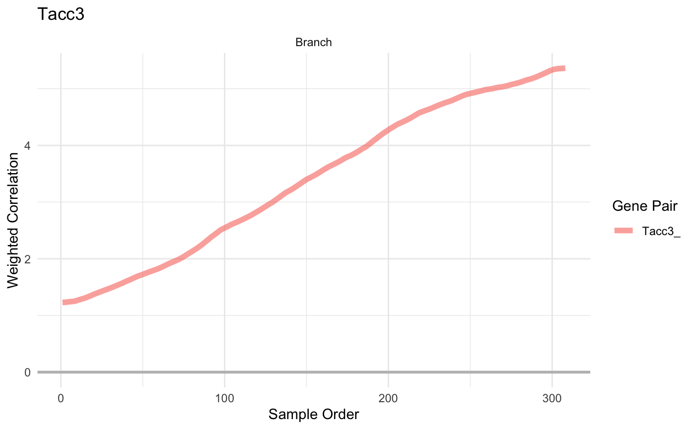
scHOT wrapper function
Now using the scHOT wrapper function, we can perform higher order testing on the selected genes, provided as a one-column matrix. To do this, we also need to set the underlying higher order function, which in this case we use weighed variance as implemented in the matrixStats package. Since this function has a weight parameter, we set higherOrderFunctionType = "weighted". For basic implementation, no other parameters need to be specified (for speed, we set numberPermutations to a small value).
scHOT_traj_wrap = scHOT(scHOT_traj,
testingScaffold = gene_to_test,
higherOrderFunction = matrixStats::weightedVar,
higherOrderFunctionType = "weighted",
numberPermutations = 50)
#> Adding testing scaffold
#> Set weight matrix
#> Calculate gobal higher order function
#> Calculate Higher Order Test Statistics
#> Perform Permutation Test
#> Permutation testing combination 1 of 3...
#> Permutation testing combination 2 of 3...
#> Permutation testing combination 3 of 3...
#> Estimating p-values
#> 1
#> 2
#> 3Output is saved as a DataFrame in the scHOT_output slot, accessible either using the slot function, or using the @ accessor. In particular, we can interrogate the higher order sequence, the sequence of locally weighted variances along the trajectory. We can see from the plot that each of these genes increases in variability along pseudotime. Note that the plots are based on ggplot2 and so can be customised as desired.
slot(scHOT_traj_wrap, "scHOT_output")
#> DataFrame with 3 rows and 14 columns
#> gene_1 globalHigherOrderFunction numberPermutations
#> <character> <matrix> <numeric>
#> Birc5 Birc5 1.991674 50
#> H2afz H2afz 0.238446 50
#> Tacc3 Tacc3 2.346598 50
#> storePermutations higherOrderSequence higherOrderStatistic
#> <logical> <NumericList> <numeric>
#> Birc5 TRUE 0.326368,0.323759,0.322789,... 1.634854
#> H2afz TRUE 0.0622930,0.0619537,0.0615607,... 0.216771
#> Tacc3 TRUE 0.803192,0.801351,0.820289,... 0.930598
#> permutations pvalPermutations FDRPermutations
#> <NumericList> <numeric> <numeric>
#> Birc5 0.500240,0.315507,0.295761,... 0.0196078 0.0196078
#> H2afz 0.0612162,0.0416660,0.0982411,... 0.0196078 0.0196078
#> Tacc3 0.417440,0.722567,0.790969,... 0.0196078 0.0196078
#> numberPermutationsEstimated globalLowerRangeEstimated
#> <integer> <numeric>
#> Birc5 50 1.991674
#> H2afz 50 0.238446
#> Tacc3 50 2.346598
#> globalUpperRangeEstimated pvalEstimated FDREstimated
#> <numeric> <numeric> <numeric>
#> Birc5 1.991674 0.0196078 0.0196078
#> H2afz 0.238446 0.0196078 0.0196078
#> Tacc3 2.346598 0.0196078 0.0196078
scHOT_traj_wrap@scHOT_output
#> DataFrame with 3 rows and 14 columns
#> gene_1 globalHigherOrderFunction numberPermutations
#> <character> <matrix> <numeric>
#> Birc5 Birc5 1.991674 50
#> H2afz H2afz 0.238446 50
#> Tacc3 Tacc3 2.346598 50
#> storePermutations higherOrderSequence higherOrderStatistic
#> <logical> <NumericList> <numeric>
#> Birc5 TRUE 0.326368,0.323759,0.322789,... 1.634854
#> H2afz TRUE 0.0622930,0.0619537,0.0615607,... 0.216771
#> Tacc3 TRUE 0.803192,0.801351,0.820289,... 0.930598
#> permutations pvalPermutations FDRPermutations
#> <NumericList> <numeric> <numeric>
#> Birc5 0.500240,0.315507,0.295761,... 0.0196078 0.0196078
#> H2afz 0.0612162,0.0416660,0.0982411,... 0.0196078 0.0196078
#> Tacc3 0.417440,0.722567,0.790969,... 0.0196078 0.0196078
#> numberPermutationsEstimated globalLowerRangeEstimated
#> <integer> <numeric>
#> Birc5 50 1.991674
#> H2afz 50 0.238446
#> Tacc3 50 2.346598
#> globalUpperRangeEstimated pvalEstimated FDREstimated
#> <numeric> <numeric> <numeric>
#> Birc5 1.991674 0.0196078 0.0196078
#> H2afz 0.238446 0.0196078 0.0196078
#> Tacc3 2.346598 0.0196078 0.0196078
slot(scHOT_traj_wrap, "scHOT_output")$higherOrderSequence
#> NumericList of length 3
#> [["1"]] 0.32636792198 0.323758922618346 ... 5.13350080711913 5.1463258826534
#> [["2"]] 0.0622930368665992 0.0619537046607012 ... 0.752024900446298
#> [["3"]] 0.803192064768597 0.801351141908489 ... 3.96122878375288
plotHigherOrderSequence(scHOT_traj_wrap, gene_to_test)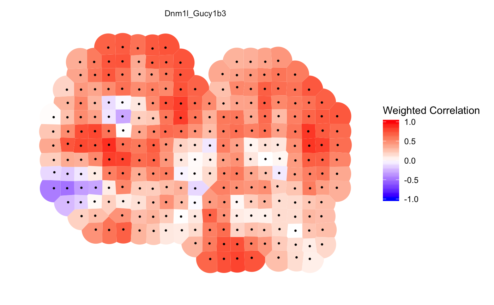
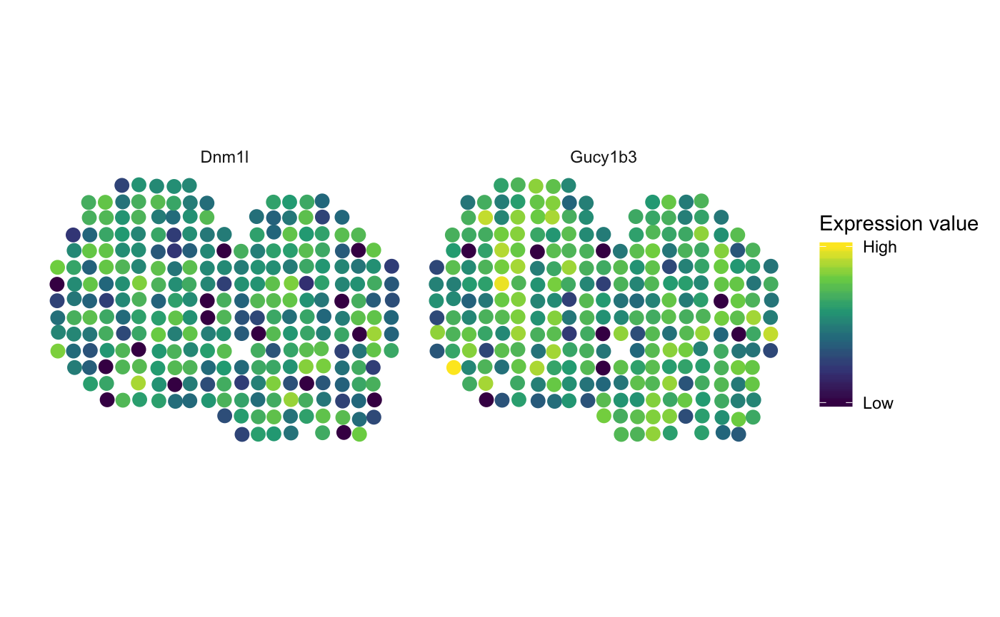
scHOT step-by-step
Now, we can perform the same testing but step-by-step, with description of the parameter selection at each step.
First, we add the testing scaffold. This is the set of genes for which we wish to perform higher order testing.
scHOT_traj@testingScaffold
#> <0 x 0 matrix>
scHOT_traj <- scHOT_addTestingScaffold(scHOT_traj, gene_to_test)
scHOT_traj@testingScaffold
#> gene_1
#> [1,] "Birc5"
#> [2,] "H2afz"
#> [3,] "Tacc3"Next, we provide parameters to build a weighting scheme. The most important parameter here is span, a value between 0 and 1 (default 0.25) which determines how large or small a window we wish to use for higher order testing. To distinguish between either ranked samples in a trajectory or in a spatial setting, we set positionType = "trajectory" and instruct to extract the trajectory ordering from the "pseudotime" column from colData(scHOT_traj).
scHOT_traj@weightMatrix
#> <0 x 0 matrix>
scHOT_traj <- scHOT_setWeightMatrix(scHOT_traj,
positionType = "trajectory",
positionColData = c("pseudotime"),
nrow.out = NULL,
span = 0.25)
dim(scHOT_traj@weightMatrix)
#> [1] 176 176
class(scHOT_traj@weightMatrix)
#> [1] "dgCMatrix"
#> attr(,"package")
#> [1] "Matrix"
plot(scHOT_traj@weightMatrix[50,])By default the weight matrix is square, with as many rows as the number of cells (columns), but if you have especially large data, you may want to reduce the weight matrix rows for faster runtimes. Here we reduce the weight matrix to roughly 50 rows using the nrow.out arguemnt. Note you can provide your own pre-prepared matrix using the weightMatrix argument.
scHOT_traj <- scHOT_setWeightMatrix(scHOT_traj,
positionType = "trajectory",
positionColData = c("pseudotime"),
nrow.out = 50,
span = 0.25)
dim(scHOT_traj@weightMatrix)
#> [1] 59 176
class(scHOT_traj@weightMatrix)
#> [1] "dgCMatrix"
#> attr(,"package")
#> [1] "Matrix"
plot(scHOT_traj@weightMatrix[50,])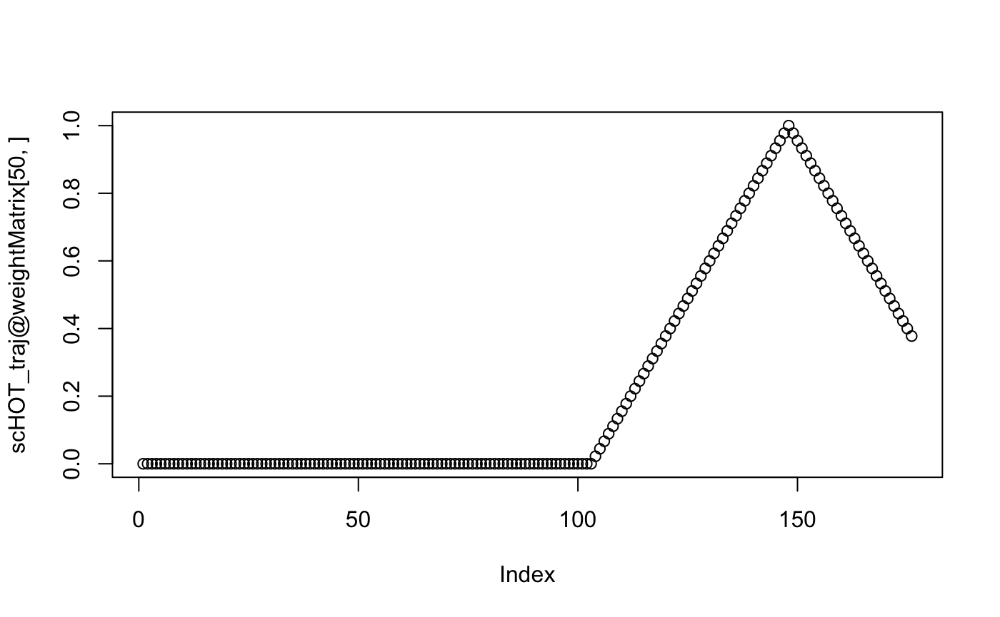
Now we calculate the global higher order function, in this case is simply the sample variance giving equal weight to all cells. This becomes important when you wish to test many genes and use a fast p-value estimation approach to speed up computation.
scHOT_traj <- scHOT_calculateGlobalHigherOrderFunction(
scHOT_traj,
higherOrderFunction = matrixStats::weightedVar,
higherOrderFunctionType = "weighted")
slot(scHOT_traj, "scHOT_output")
#> DataFrame with 3 rows and 2 columns
#> gene_1 globalHigherOrderFunction
#> <character> <matrix>
#> 1 Birc5 1.991674
#> 2 H2afz 0.238446
#> 3 Tacc3 2.346598
apply(assay(scHOT_traj, "expression")[c(gene_to_test),],1,var)
#> Birc5 H2afz Tacc3
#> 1.9916742 0.2384462 2.3465976scHOT allows for a lot of customisation. In particular, you can set which tests you wish to perform permutation testing for, and if so, what number of permutations can be used, and if they should be stored for later use. Here, we set the number of permutations to a mix of 20 and 50. Allowing different permutation numbers is useful if we wish to perform a lot of permutations for one test, and few for another.
Note if you wish to explicitly set the number of permutations for all tests, then ensure that numberScaffold is set above the number of tests (default 100).
scHOT_setPermutationScaffold only gives the instructions for running permutation testing, it doesn’t actually perform the testing.
scHOT_traj <- scHOT_setPermutationScaffold(scHOT_traj,
numberPermutations = c(20,50,20),
storePermutations = c(TRUE, FALSE, TRUE))
slot(scHOT_traj, "scHOT_output")
#> DataFrame with 3 rows and 4 columns
#> gene_1 globalHigherOrderFunction numberPermutations storePermutations
#> <character> <matrix> <numeric> <logical>
#> 1 Birc5 1.991674 20 TRUE
#> 2 H2afz 0.238446 50 FALSE
#> 3 Tacc3 2.346598 20 TRUENow we can calculate the observed test statistic. This is calculated as a summary function (default standard deviation) of the local higher order sequence, which is parametrised using the higher order function (here weighted variance) and weighting scheme (here thinned triangular weight matrix with span 0.25).
scHOT_traj <- scHOT_calculateHigherOrderTestStatistics(
scHOT_traj,
higherOrderSummaryFunction = sd)
slot(scHOT_traj, "scHOT_output")
#> DataFrame with 3 rows and 6 columns
#> gene_1 globalHigherOrderFunction numberPermutations storePermutations
#> <character> <matrix> <numeric> <logical>
#> 1 Birc5 1.991674 20 TRUE
#> 2 H2afz 0.238446 50 FALSE
#> 3 Tacc3 2.346598 20 TRUE
#> higherOrderSequence higherOrderStatistic
#> <NumericList> <numeric>
#> 1 0.326368,0.322652,0.312199,... 1.644648
#> 2 0.0622930,0.0611996,0.0600874,... 0.217727
#> 3 0.803192,0.838504,0.873359,... 0.940253Once the test statistic is calculated, we perform permutation testing, using the instructions we provided earlier.
system.time(scHOT_traj <- scHOT_performPermutationTest(
scHOT_traj,
verbose = TRUE,
parallel = FALSE))
#> Permutation testing combination 1 of 3...
#> Permutation testing combination 2 of 3...
#> Permutation testing combination 3 of 3...
#> user system elapsed
#> 3.842 0.079 3.926
slot(scHOT_traj, "scHOT_output")
#> DataFrame with 3 rows and 9 columns
#> gene_1 globalHigherOrderFunction numberPermutations storePermutations
#> <character> <matrix> <numeric> <logical>
#> 1 Birc5 1.991674 20 TRUE
#> 2 H2afz 0.238446 50 FALSE
#> 3 Tacc3 2.346598 20 TRUE
#> higherOrderSequence higherOrderStatistic
#> <NumericList> <numeric>
#> 1 0.326368,0.322652,0.312199,... 1.644648
#> 2 0.0622930,0.0611996,0.0600874,... 0.217727
#> 3 0.803192,0.838504,0.873359,... 0.940253
#> permutations pvalPermutations FDRPermutations
#> <NumericList> <numeric> <numeric>
#> 1 0.157494,0.638945,0.529321,... 0.0476190 0.047619
#> 2 NA 0.0196078 0.047619
#> 3 0.321295,0.320501,0.519373,... 0.0476190 0.047619To avoid P-values identically zero, we rescale zero P-values to 1/(1+numberPermutations).
We could also use the existing stored permutations to estimate P-values, since genes with a similar global higher order function are likely to have a similar null distribution. In this example case it does not show much gain computationally, but this can significantly reduce the number of permutation tests needed for large datasets and testing strategies.
Running scHOT_estimatePvalues results in more columns in the scHOT_output slot, corresponding to the number of permutations used in estimating, the range of the global higher order function used for estimating, as well as the estimated P-value itself and FDR adjusted P-value. Here, we set a maximum of 10,000 permutations to be used, for genes with at most a difference of 5 in the global higher order function (the variance).
scHOT_traj <- scHOT_estimatePvalues(scHOT_traj,
nperm_estimate = 10000,
maxDist = 5)
slot(scHOT_traj, "scHOT_output")
#> DataFrame with 3 rows and 14 columns
#> gene_1 globalHigherOrderFunction numberPermutations storePermutations
#> <character> <matrix> <numeric> <logical>
#> 1 Birc5 1.991674 20 TRUE
#> 2 H2afz 0.238446 50 FALSE
#> 3 Tacc3 2.346598 20 TRUE
#> higherOrderSequence higherOrderStatistic
#> <NumericList> <numeric>
#> 1 0.326368,0.322652,0.312199,... 1.644648
#> 2 0.0622930,0.0611996,0.0600874,... 0.217727
#> 3 0.803192,0.838504,0.873359,... 0.940253
#> permutations pvalPermutations FDRPermutations
#> <NumericList> <numeric> <numeric>
#> 1 0.157494,0.638945,0.529321,... 0.0476190 0.047619
#> 2 NA 0.0196078 0.047619
#> 3 0.321295,0.320501,0.519373,... 0.0476190 0.047619
#> numberPermutationsEstimated globalLowerRangeEstimated
#> <integer> <numeric>
#> 1 40 1.99167
#> 2 40 1.99167
#> 3 40 1.99167
#> globalUpperRangeEstimated pvalEstimated FDREstimated
#> <numeric> <numeric> <numeric>
#> 1 2.3466 0.0243902 0.0375
#> 2 2.3466 0.9500000 0.9500
#> 3 2.3466 0.0250000 0.0375Note that having performed the testing using the thinned weight matrix, we can still plot, but beware that not every position is sampled.
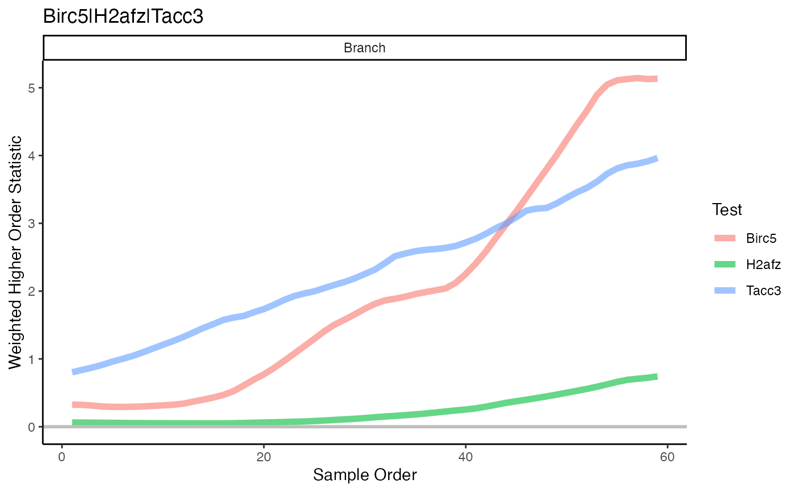
Spatial differential correlation in Mouse Olfactory Bulb
In this example, we look at the Spatial Transcriptomics mouse olfactory bulb data. This data is provided in the form of a SingleCellExperiment object, with the spatial coordinates provided in the colData slot. For file size reasons we only load up a small number of genes, corresponding to highly variable genes (HVGs) that are not found to be significantly differentially expressed in space.
data(MOB_subset)
sce_MOB_subset <- MOB_subset$sce_MOB_subset
sce_MOB_subset
#> class: SingleCellExperiment
#> dim: 43 262
#> metadata(1): log.exprs.offset
#> assays(2): counts logcounts
#> rownames(43): Abat Actb ... Vdac3 Wdfy3
#> rowData names(0):
#> colnames(262): 16.92x9.015 16.945x11.075 ... 27.018x20.088
#> 17.964x10.137
#> colData names(2): x y
#> reducedDimNames(0):
#> altExpNames(0):We build the scHOT object using scHOT_buildFromSCE. Note that scHOT only takes in a single assay slot, for which testing is based on.
scHOT_spatial <- scHOT_buildFromSCE(sce_MOB_subset,
assayName = "logcounts",
positionType = "spatial",
positionColData = c("x", "y"))
scHOT_spatial
#> class: scHOT
#> dim: 43 262
#> metadata(0):
#> assays(1): expression
#> rownames(43): Abat Actb ... Vdac3 Wdfy3
#> rowData names(0):
#> colnames(262): 16.92x9.015 16.945x11.075 ... 27.018x20.088
#> 17.964x10.137
#> colData names(2): x y
#> reducedDimNames(0):
#> altExpNames(0):
#> testingScaffold dim: 0 0
#> weightMatrix dim: 0 0
#> scHOT_output colnames (0):
#> param names (0):
#> position type: spatial
Perform scHOT step by step - skip ahead for wrapper using scHOT
In this example, we want to perform spatial differential correlation testing between distinct pairs of genes. We build up our testing scaffold by taking all pairs of the non-differentially expressed HVGs. For practicality, we only consider a small set of pairs for testing here.
pairs <- t(combn(rownames(sce_MOB_subset),2))
rownames(pairs) <- apply(pairs,1,paste0,collapse = "_")
head(pairs)
#> [,1] [,2]
#> Abat_Actb "Abat" "Actb"
#> Abat_Arrb1 "Abat" "Arrb1"
#> Abat_Atp6v1c1 "Abat" "Atp6v1c1"
#> Abat_Atrnl1 "Abat" "Atrnl1"
#> Abat_Bai1 "Abat" "Bai1"
#> Abat_Calm1 "Abat" "Calm1"
set.seed(2020)
pairs <- pairs[sample(nrow(pairs), 20), ]
if (!"Arrb1_Mtor" %in% rownames(pairs)) {
pairs <- rbind(pairs, "Arrb1_Mtor" = c("Arrb1", "Mtor"))
}
if (!"Dnm1l_Fam63b" %in% rownames(pairs)) {
pairs <- rbind(pairs, "Dnm1l_Fam63b" = c("Dnm1l", "Fam63b"))
}
scHOT_spatial <- scHOT_addTestingScaffold(scHOT_spatial, pairs)
scHOT_spatial@testingScaffold
#> gene_1 gene_2
#> Dnm1l_Gucy1b3 "Dnm1l" "Gucy1b3"
#> Bai1_Vdac3 "Bai1" "Vdac3"
#> Igf2_Tuba1a "Igf2" "Tuba1a"
#> Gm15421_Myo10 "Gm15421" "Myo10"
#> Mtor_Tuba1a "Mtor" "Tuba1a"
#> Cldn11_Luzp2 "Cldn11" "Luzp2"
#> Calm1_Wdfy3 "Calm1" "Wdfy3"
#> Atrnl1_Calm1 "Atrnl1" "Calm1"
#> Atrnl1_Dnm3 "Atrnl1" "Dnm3"
#> Mlc1_Uchl1 "Mlc1" "Uchl1"
#> Ildr2_Tmem47 "Ildr2" "Tmem47"
#> Actb_Gm15421 "Actb" "Gm15421"
#> Atrnl1_Wdfy3 "Atrnl1" "Wdfy3"
#> Gucy1b3_Ildr2 "Gucy1b3" "Ildr2"
#> Fam63b_Gm15421 "Fam63b" "Gm15421"
#> Scd2_Wdfy3 "Scd2" "Wdfy3"
#> Abat_Prrc2b "Abat" "Prrc2b"
#> Ildr2_Nfib "Ildr2" "Nfib"
#> Cst3_Mlc1 "Cst3" "Mlc1"
#> Cldn11_Mlc1 "Cldn11" "Mlc1"
#> Arrb1_Mtor "Arrb1" "Mtor"
#> Dnm1l_Fam63b "Dnm1l" "Fam63b"Note that since we are performing differential correlation testing, our testing scaffold is a matrix with two columns. If you wish to use some higher order function with more than two genes, you can simply add more columns to the testing scaffold, and ensure there are more arguments in the provided higher order function.
Now we set the weight matrix, using the positional coordinates in the scHOT object. The span parameter here corresponds to the proportion of cells that have nonzero values around a radius of the central cell.
This can also be thinned for faster computation by setting the nrow.out argument to the number of samples to roughly thin to.
scHOT_spatial <- scHOT_setWeightMatrix(scHOT_spatial,
positionColData = c("x","y"),
positionType = "spatial",
nrow.out = NULL,
span = 0.05)
dim(slot(scHOT_spatial, "weightMatrix"))
#> [1] 262 262We can visualise the weighting scheme for each row of the weight matrix.
cellID = 75
ggplot(as.data.frame(colData(scHOT_spatial)), aes(x = -x, y = y)) +
geom_point(aes(colour = slot(scHOT_spatial, "weightMatrix")[cellID,],
size = slot(scHOT_spatial, "weightMatrix")[cellID,])) +
scale_colour_gradient(low = "black", high = "purple") +
scale_size_continuous(range = c(1,5)) +
theme_classic() +
guides(colour = guide_legend(title = "Spatial Weight"),
size = guide_legend(title = "Spatial Weight")) +
ggtitle(paste0("Central cell: ", cellID))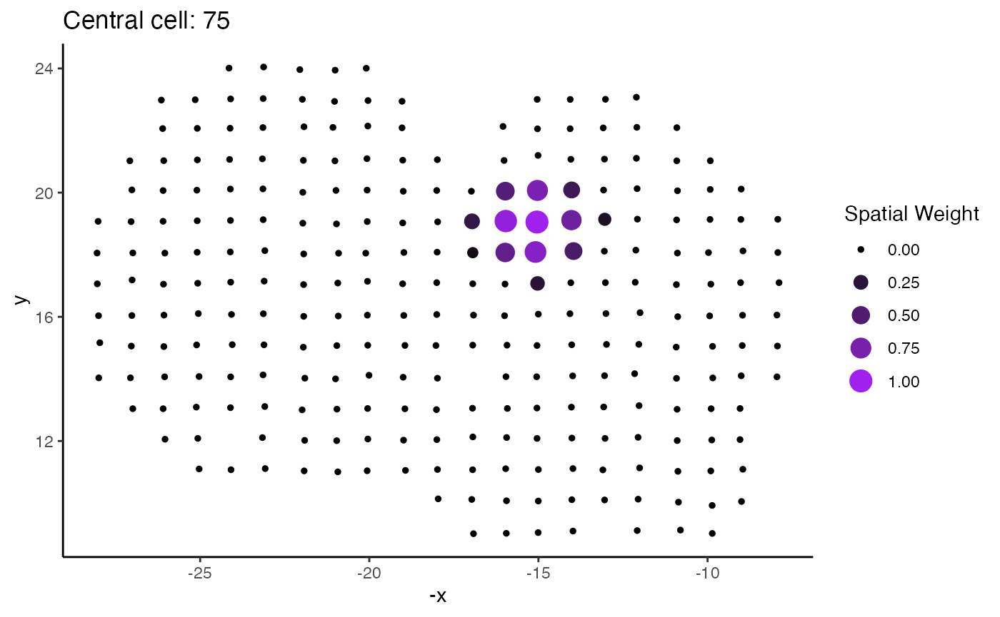
Now we can calculate the global higher order function. In this case, we use weighted Spearman correlation as our weighted higher order function, and so this is simply equivalent to calculating Spearman correlation for the gene pairs of interest.
scHOT_spatial <- scHOT_calculateGlobalHigherOrderFunction(
scHOT_spatial,
higherOrderFunction = weightedSpearman,
higherOrderFunctionType = "weighted")
slot(scHOT_spatial, "scHOT_output")
#> DataFrame with 22 rows and 3 columns
#> gene_1 gene_2 globalHigherOrderFunction
#> <character> <character> <matrix>
#> Dnm1l_Gucy1b3 Dnm1l Gucy1b3 0.0635577
#> Bai1_Vdac3 Bai1 Vdac3 0.0382758
#> Igf2_Tuba1a Igf2 Tuba1a 0.1976297
#> Gm15421_Myo10 Gm15421 Myo10 0.0348911
#> Mtor_Tuba1a Mtor Tuba1a 0.0810291
#> ... ... ... ...
#> Ildr2_Nfib Ildr2 Nfib -0.0164664
#> Cst3_Mlc1 Cst3 Mlc1 0.4294438
#> Cldn11_Mlc1 Cldn11 Mlc1 0.0168096
#> Arrb1_Mtor Arrb1 Mtor 0.0762560
#> Dnm1l_Fam63b Dnm1l Fam63b 0.1251182
head(diag(cor(t(assay(scHOT_spatial, "expression")[pairs[,1],]),
t(assay(scHOT_spatial, "expression")[pairs[,2],]),
method = "spearman")))
#> [1] 0.06355767 0.03827582 0.19762970 0.03489105 0.08102912 -0.07465933Now we can set the permutation parameters. In this case, we only perform 50 permutations for around 10 randomly selected tests.
scHOT_spatial <- scHOT_setPermutationScaffold(scHOT_spatial,
numberPermutations = 50,
numberScaffold = 10)
slot(scHOT_spatial, "scHOT_output")
#> DataFrame with 22 rows and 5 columns
#> gene_1 gene_2 globalHigherOrderFunction
#> <character> <character> <matrix>
#> Dnm1l_Gucy1b3 Dnm1l Gucy1b3 0.0635577
#> Bai1_Vdac3 Bai1 Vdac3 0.0382758
#> Igf2_Tuba1a Igf2 Tuba1a 0.1976297
#> Gm15421_Myo10 Gm15421 Myo10 0.0348911
#> Mtor_Tuba1a Mtor Tuba1a 0.0810291
#> ... ... ... ...
#> Ildr2_Nfib Ildr2 Nfib -0.0164664
#> Cst3_Mlc1 Cst3 Mlc1 0.4294438
#> Cldn11_Mlc1 Cldn11 Mlc1 0.0168096
#> Arrb1_Mtor Arrb1 Mtor 0.0762560
#> Dnm1l_Fam63b Dnm1l Fam63b 0.1251182
#> numberPermutations storePermutations
#> <numeric> <logical>
#> Dnm1l_Gucy1b3 0 TRUE
#> Bai1_Vdac3 0 TRUE
#> Igf2_Tuba1a 0 TRUE
#> Gm15421_Myo10 50 TRUE
#> Mtor_Tuba1a 0 TRUE
#> ... ... ...
#> Ildr2_Nfib 50 TRUE
#> Cst3_Mlc1 50 TRUE
#> Cldn11_Mlc1 0 TRUE
#> Arrb1_Mtor 0 TRUE
#> Dnm1l_Fam63b 0 TRUENow we calculate the observed higher order test statistics, which in this case correspond to the summary of local correlation vectors.
scHOT_spatial <- scHOT_calculateHigherOrderTestStatistics(scHOT_spatial)
slot(scHOT_spatial, "scHOT_output")
#> DataFrame with 22 rows and 7 columns
#> gene_1 gene_2 globalHigherOrderFunction
#> <character> <character> <matrix>
#> Dnm1l_Gucy1b3 Dnm1l Gucy1b3 0.0635577
#> Bai1_Vdac3 Bai1 Vdac3 0.0382758
#> Igf2_Tuba1a Igf2 Tuba1a 0.1976297
#> Gm15421_Myo10 Gm15421 Myo10 0.0348911
#> Mtor_Tuba1a Mtor Tuba1a 0.0810291
#> ... ... ... ...
#> Ildr2_Nfib Ildr2 Nfib -0.0164664
#> Cst3_Mlc1 Cst3 Mlc1 0.4294438
#> Cldn11_Mlc1 Cldn11 Mlc1 0.0168096
#> Arrb1_Mtor Arrb1 Mtor 0.0762560
#> Dnm1l_Fam63b Dnm1l Fam63b 0.1251182
#> numberPermutations storePermutations
#> <numeric> <logical>
#> Dnm1l_Gucy1b3 0 TRUE
#> Bai1_Vdac3 0 TRUE
#> Igf2_Tuba1a 0 TRUE
#> Gm15421_Myo10 50 TRUE
#> Mtor_Tuba1a 0 TRUE
#> ... ... ...
#> Ildr2_Nfib 50 TRUE
#> Cst3_Mlc1 50 TRUE
#> Cldn11_Mlc1 0 TRUE
#> Arrb1_Mtor 0 TRUE
#> Dnm1l_Fam63b 0 TRUE
#> higherOrderSequence higherOrderStatistic
#> <NumericList> <numeric>
#> Dnm1l_Gucy1b3 0.1619819,0.0935048,0.3071218,... 0.276894
#> Bai1_Vdac3 0.0173442,-0.6709547,-0.1768493,... 0.368065
#> Igf2_Tuba1a 0.841093,0.751830,0.817549,... 0.311370
#> Gm15421_Myo10 0.1327957,-0.0544596,-0.0364751,... 0.285366
#> Mtor_Tuba1a 0.4097516,-0.0465381, 0.0754223,... 0.345202
#> ... ... ...
#> Ildr2_Nfib 0.0684620,-0.1097042, 0.0142888,... 0.281278
#> Cst3_Mlc1 -0.320555, 0.234777,-0.228425,... 0.289625
#> Cldn11_Mlc1 -0.504075,-0.197786,-0.346225,... 0.321270
#> Arrb1_Mtor 0.290687,0.420980,0.301204,... 0.323072
#> Dnm1l_Fam63b -0.0531722, 0.2088504, 0.0133499,... 0.364277Now we perform permutation testing for those tests which we provided with a nonzero value for number of permutations. This takes about a minute to run.
system.time(scHOT_spatial <- scHOT_performPermutationTest(
scHOT_spatial,
verbose = TRUE,
parallel = FALSE))
#> Permutation testing combination 4 of 22...
#> Permutation testing combination 8 of 22...
#> Permutation testing combination 14 of 22...
#> Permutation testing combination 18 of 22...
#> Permutation testing combination 19 of 22...
#> user system elapsed
#> 57.574 0.483 58.123
slot(scHOT_spatial, "scHOT_output")
#> DataFrame with 22 rows and 10 columns
#> gene_1 gene_2 globalHigherOrderFunction
#> <character> <character> <matrix>
#> Dnm1l_Gucy1b3 Dnm1l Gucy1b3 0.0635577
#> Bai1_Vdac3 Bai1 Vdac3 0.0382758
#> Igf2_Tuba1a Igf2 Tuba1a 0.1976297
#> Gm15421_Myo10 Gm15421 Myo10 0.0348911
#> Mtor_Tuba1a Mtor Tuba1a 0.0810291
#> ... ... ... ...
#> Ildr2_Nfib Ildr2 Nfib -0.0164664
#> Cst3_Mlc1 Cst3 Mlc1 0.4294438
#> Cldn11_Mlc1 Cldn11 Mlc1 0.0168096
#> Arrb1_Mtor Arrb1 Mtor 0.0762560
#> Dnm1l_Fam63b Dnm1l Fam63b 0.1251182
#> numberPermutations storePermutations
#> <numeric> <logical>
#> Dnm1l_Gucy1b3 0 TRUE
#> Bai1_Vdac3 0 TRUE
#> Igf2_Tuba1a 0 TRUE
#> Gm15421_Myo10 50 TRUE
#> Mtor_Tuba1a 0 TRUE
#> ... ... ...
#> Ildr2_Nfib 50 TRUE
#> Cst3_Mlc1 50 TRUE
#> Cldn11_Mlc1 0 TRUE
#> Arrb1_Mtor 0 TRUE
#> Dnm1l_Fam63b 0 TRUE
#> higherOrderSequence higherOrderStatistic
#> <NumericList> <numeric>
#> Dnm1l_Gucy1b3 0.1619819,0.0935048,0.3071218,... 0.276894
#> Bai1_Vdac3 0.0173442,-0.6709547,-0.1768493,... 0.368065
#> Igf2_Tuba1a 0.841093,0.751830,0.817549,... 0.311370
#> Gm15421_Myo10 0.1327957,-0.0544596,-0.0364751,... 0.285366
#> Mtor_Tuba1a 0.4097516,-0.0465381, 0.0754223,... 0.345202
#> ... ... ...
#> Ildr2_Nfib 0.0684620,-0.1097042, 0.0142888,... 0.281278
#> Cst3_Mlc1 -0.320555, 0.234777,-0.228425,... 0.289625
#> Cldn11_Mlc1 -0.504075,-0.197786,-0.346225,... 0.321270
#> Arrb1_Mtor 0.290687,0.420980,0.301204,... 0.323072
#> Dnm1l_Fam63b -0.0531722, 0.2088504, 0.0133499,... 0.364277
#> permutations pvalPermutations FDRPermutations
#> <NumericList> <numeric> <numeric>
#> Dnm1l_Gucy1b3 NA NA NA
#> Bai1_Vdac3 NA NA NA
#> Igf2_Tuba1a NA NA NA
#> Gm15421_Myo10 0.311944,0.312378,0.324099,... 0.94 0.98
#> Mtor_Tuba1a NA NA NA
#> ... ... ... ...
#> Ildr2_Nfib 0.310644,0.347605,0.368242,... 0.98 0.98
#> Cst3_Mlc1 0.249664,0.273539,0.280372,... 0.22 0.70
#> Cldn11_Mlc1 NA NA NA
#> Arrb1_Mtor NA NA NA
#> Dnm1l_Fam63b NA NA NAWith the above, we calculated P-values for some of the tests, but we have not performed permutation testing for all tests. Here, we employ a permutation sharing approach to estimate significance for the other tests. Ideally this would be performed with around a hundred tests each with around 1,000 permutations to ensure accurate P-value estimation. You can check how good an estimate you can expect by plotting the global higher order statistic against the permuted test statistics, there should be good representation along the x-axis and the fitted curve should appear quite smooth. Here the fitted curve is bumpy, so we would suggest selecting more genes and more permutations.
We estimate P-values by borrowing 100 permutations from closest tests with a difference in global higher order statistic of at most 0.1
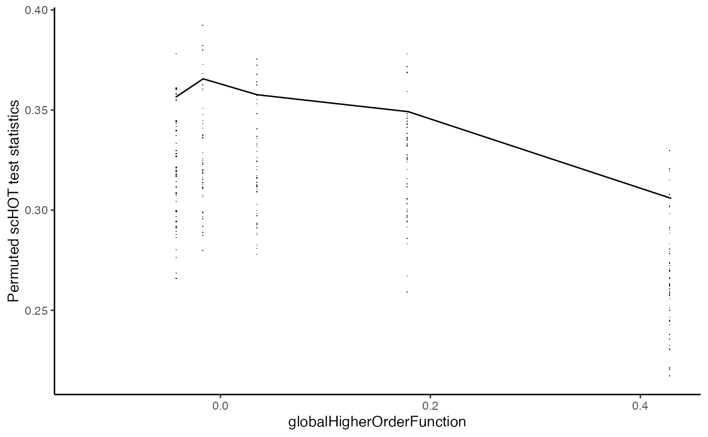
scHOT_spatial <- scHOT_estimatePvalues(scHOT_spatial,
nperm_estimate = 100,
maxDist = 0.1)
slot(scHOT_spatial, "scHOT_output")
#> DataFrame with 22 rows and 15 columns
#> gene_1 gene_2 globalHigherOrderFunction
#> <character> <character> <matrix>
#> Dnm1l_Gucy1b3 Dnm1l Gucy1b3 0.0635577
#> Bai1_Vdac3 Bai1 Vdac3 0.0382758
#> Igf2_Tuba1a Igf2 Tuba1a 0.1976297
#> Gm15421_Myo10 Gm15421 Myo10 0.0348911
#> Mtor_Tuba1a Mtor Tuba1a 0.0810291
#> ... ... ... ...
#> Ildr2_Nfib Ildr2 Nfib -0.0164664
#> Cst3_Mlc1 Cst3 Mlc1 0.4294438
#> Cldn11_Mlc1 Cldn11 Mlc1 0.0168096
#> Arrb1_Mtor Arrb1 Mtor 0.0762560
#> Dnm1l_Fam63b Dnm1l Fam63b 0.1251182
#> numberPermutations storePermutations
#> <numeric> <logical>
#> Dnm1l_Gucy1b3 0 TRUE
#> Bai1_Vdac3 0 TRUE
#> Igf2_Tuba1a 0 TRUE
#> Gm15421_Myo10 50 TRUE
#> Mtor_Tuba1a 0 TRUE
#> ... ... ...
#> Ildr2_Nfib 50 TRUE
#> Cst3_Mlc1 50 TRUE
#> Cldn11_Mlc1 0 TRUE
#> Arrb1_Mtor 0 TRUE
#> Dnm1l_Fam63b 0 TRUE
#> higherOrderSequence higherOrderStatistic
#> <NumericList> <numeric>
#> Dnm1l_Gucy1b3 0.1619819,0.0935048,0.3071218,... 0.276894
#> Bai1_Vdac3 0.0173442,-0.6709547,-0.1768493,... 0.368065
#> Igf2_Tuba1a 0.841093,0.751830,0.817549,... 0.311370
#> Gm15421_Myo10 0.1327957,-0.0544596,-0.0364751,... 0.285366
#> Mtor_Tuba1a 0.4097516,-0.0465381, 0.0754223,... 0.345202
#> ... ... ...
#> Ildr2_Nfib 0.0684620,-0.1097042, 0.0142888,... 0.281278
#> Cst3_Mlc1 -0.320555, 0.234777,-0.228425,... 0.289625
#> Cldn11_Mlc1 -0.504075,-0.197786,-0.346225,... 0.321270
#> Arrb1_Mtor 0.290687,0.420980,0.301204,... 0.323072
#> Dnm1l_Fam63b -0.0531722, 0.2088504, 0.0133499,... 0.364277
#> permutations pvalPermutations FDRPermutations
#> <NumericList> <numeric> <numeric>
#> Dnm1l_Gucy1b3 NA NA NA
#> Bai1_Vdac3 NA NA NA
#> Igf2_Tuba1a NA NA NA
#> Gm15421_Myo10 0.311944,0.312378,0.324099,... 0.94 0.98
#> Mtor_Tuba1a NA NA NA
#> ... ... ... ...
#> Ildr2_Nfib 0.310644,0.347605,0.368242,... 0.98 0.98
#> Cst3_Mlc1 0.249664,0.273539,0.280372,... 0.22 0.70
#> Cldn11_Mlc1 NA NA NA
#> Arrb1_Mtor NA NA NA
#> Dnm1l_Fam63b NA NA NA
#> numberPermutationsEstimated globalLowerRangeEstimated
#> <integer> <numeric>
#> Dnm1l_Gucy1b3 100 -0.0164664
#> Bai1_Vdac3 150 -0.0422096
#> Igf2_Tuba1a 50 0.1789213
#> Gm15421_Myo10 150 -0.0422096
#> Mtor_Tuba1a 150 -0.0164664
#> ... ... ...
#> Ildr2_Nfib 150 -0.0422096
#> Cst3_Mlc1 50 0.4294438
#> Cldn11_Mlc1 150 -0.0422096
#> Arrb1_Mtor 100 -0.0164664
#> Dnm1l_Fam63b 100 0.0348911
#> globalUpperRangeEstimated pvalEstimated FDREstimated
#> <numeric> <numeric> <numeric>
#> Dnm1l_Gucy1b3 0.0348911 1.0000000 1.000000
#> Bai1_Vdac3 0.0348911 0.0533333 0.513333
#> Igf2_Tuba1a 0.1789213 0.6800000 0.997333
#> Gm15421_Myo10 0.0348911 0.9466667 0.998730
#> Mtor_Tuba1a 0.1789213 0.1933333 0.605000
#> ... ... ... ...
#> Ildr2_Nfib 0.0348911 0.953333 0.998730
#> Cst3_Mlc1 0.4294438 0.220000 0.605000
#> Cldn11_Mlc1 0.0348911 0.426667 0.782222
#> Arrb1_Mtor 0.0348911 0.410000 0.782222
#> Dnm1l_Fam63b 0.1789213 0.070000 0.513333
ggplot(as.data.frame(slot(scHOT_spatial, "scHOT_output")),
aes(x = -log10(pvalPermutations), y = -log10(pvalEstimated))) +
geom_point() +
theme_classic() +
geom_abline(slope = 1, intercept = 0) +
xlab("Permutation -log10(p-value)") +
ylab("Estimated -log10(p-value)") +
NULL
In this example we can still see fairly good concordance between the estimated and direct permutation tests, even with a very small number of permutations.
Once testing is done, we can interrogate the results with various plots. The plotHigherOrderSequence function will plot the points in space, coloured by the local correlation estimates, and plotOrderedExpression will plot the points in space, coloured by expression of each gene.
colData(scHOT_spatial)[, "-x"] <- -colData(scHOT_spatial)[, "x"]
plotHigherOrderSequence(scHOT_spatial, c("Dnm1l_Fam63b"),
positionColData = c("-x", "y"))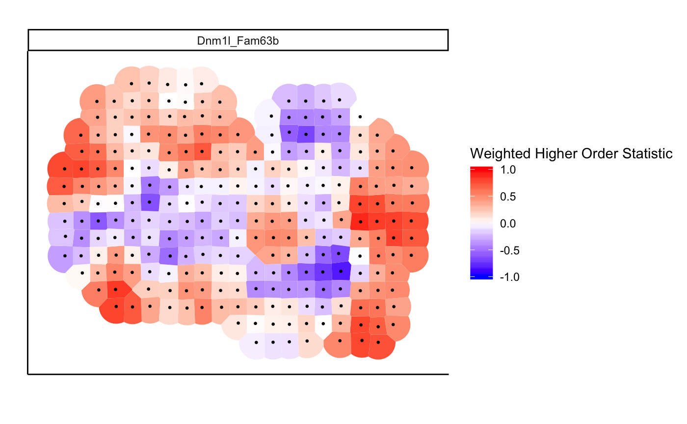
plotOrderedExpression(scHOT_spatial, c("Dnm1l", "Fam63b"),
positionColData = c("-x", "y"),
assayName = "expression")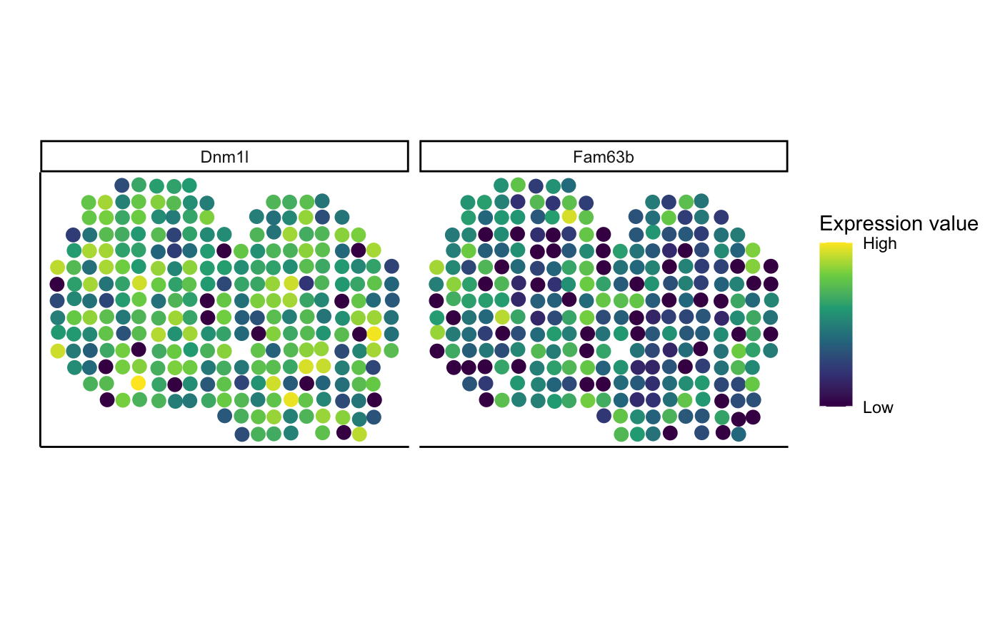
Perform scHOT using scHOT wrapper function
Strip the existing scHOT output using scHOT_stripOutput before rerunning scHOT in a new context.
scHOT_spatial <- scHOT_stripOutput(scHOT_spatial, force = TRUE)
scHOT_spatial
#> class: scHOT
#> dim: 43 262
#> metadata(0):
#> assays(1): expression
#> rownames(43): Abat Actb ... Vdac3 Wdfy3
#> rowData names(0):
#> colnames(262): 16.92x9.015 16.945x11.075 ... 27.018x20.088
#> 17.964x10.137
#> colData names(3): x y -x
#> reducedDimNames(0):
#> altExpNames(0):
#> testingScaffold dim: 22 2
#> weightMatrix dim: 262 262
#> scHOT_output colnames (0):
#> param names (3): higherOrderFunctionType higherOrderFunction
#> higherOrderSummaryFunction
#> position type: spatial
slot(scHOT_spatial, "scHOT_output")
#> DataFrame with 0 rows and 0 columnsWe can perform scHOT in a single wrapper function, which will perform the steps as described above, with all parameters given at once.
scHOT_spatial <- scHOT(scHOT_spatial,
testingScaffold = pairs,
positionType = "spatial",
positionColData = c("x", "y"),
nrow.out = NULL,
higherOrderFunction = weightedSpearman,
higherOrderFunctionType = "weighted",
numberPermutations = 50,
numberScaffold = 10,
higherOrderSummaryFunction = sd,
parallel = FALSE,
verbose = FALSE,
span = 0.05)
slot(scHOT_spatial, "scHOT_output")
#> DataFrame with 22 rows and 15 columns
#> gene_1 gene_2 globalHigherOrderFunction
#> <character> <character> <matrix>
#> Dnm1l_Gucy1b3 Dnm1l Gucy1b3 0.0635577
#> Bai1_Vdac3 Bai1 Vdac3 0.0382758
#> Igf2_Tuba1a Igf2 Tuba1a 0.1976297
#> Gm15421_Myo10 Gm15421 Myo10 0.0348911
#> Mtor_Tuba1a Mtor Tuba1a 0.0810291
#> ... ... ... ...
#> Ildr2_Nfib Ildr2 Nfib -0.0164664
#> Cst3_Mlc1 Cst3 Mlc1 0.4294438
#> Cldn11_Mlc1 Cldn11 Mlc1 0.0168096
#> Arrb1_Mtor Arrb1 Mtor 0.0762560
#> Dnm1l_Fam63b Dnm1l Fam63b 0.1251182
#> numberPermutations storePermutations
#> <numeric> <logical>
#> Dnm1l_Gucy1b3 0 TRUE
#> Bai1_Vdac3 0 TRUE
#> Igf2_Tuba1a 0 TRUE
#> Gm15421_Myo10 0 TRUE
#> Mtor_Tuba1a 50 TRUE
#> ... ... ...
#> Ildr2_Nfib 0 TRUE
#> Cst3_Mlc1 0 TRUE
#> Cldn11_Mlc1 0 TRUE
#> Arrb1_Mtor 50 TRUE
#> Dnm1l_Fam63b 0 TRUE
#> higherOrderSequence higherOrderStatistic
#> <NumericList> <numeric>
#> Dnm1l_Gucy1b3 0.1619819,0.0935048,0.3071218,... 0.276894
#> Bai1_Vdac3 0.0173442,-0.6709547,-0.1768493,... 0.368065
#> Igf2_Tuba1a 0.841093,0.751830,0.817549,... 0.311370
#> Gm15421_Myo10 0.1327957,-0.0544596,-0.0364751,... 0.285366
#> Mtor_Tuba1a 0.4097516,-0.0465381, 0.0754223,... 0.345202
#> ... ... ...
#> Ildr2_Nfib 0.0684620,-0.1097042, 0.0142888,... 0.281278
#> Cst3_Mlc1 -0.320555, 0.234777,-0.228425,... 0.289625
#> Cldn11_Mlc1 -0.504075,-0.197786,-0.346225,... 0.321270
#> Arrb1_Mtor 0.290687,0.420980,0.301204,... 0.323072
#> Dnm1l_Fam63b -0.0531722, 0.2088504, 0.0133499,... 0.364277
#> permutations pvalPermutations FDRPermutations
#> <NumericList> <numeric> <numeric>
#> Dnm1l_Gucy1b3 NA NA NA
#> Bai1_Vdac3 NA NA NA
#> Igf2_Tuba1a NA NA NA
#> Gm15421_Myo10 NA NA NA
#> Mtor_Tuba1a 0.314568,0.334639,0.297245,... 0.26 0.7
#> ... ... ... ...
#> Ildr2_Nfib NA NA NA
#> Cst3_Mlc1 NA NA NA
#> Cldn11_Mlc1 NA NA NA
#> Arrb1_Mtor 0.299674,0.280243,0.321495,... 0.42 0.7
#> Dnm1l_Fam63b NA NA NA
#> numberPermutationsEstimated globalLowerRangeEstimated
#> <integer> <numeric>
#> Dnm1l_Gucy1b3 200 0.0434098
#> Bai1_Vdac3 200 0.0434098
#> Igf2_Tuba1a 50 0.1789213
#> Gm15421_Myo10 200 0.0434098
#> Mtor_Tuba1a 250 0.0434098
#> ... ... ...
#> Ildr2_Nfib 150 0.0434098
#> Cst3_Mlc1 250 0.0434098
#> Cldn11_Mlc1 200 0.0434098
#> Arrb1_Mtor 200 0.0434098
#> Dnm1l_Fam63b 250 0.0434098
#> globalUpperRangeEstimated pvalEstimated FDREstimated
#> <numeric> <numeric> <numeric>
#> Dnm1l_Gucy1b3 0.0861924 0.970 0.970000
#> Bai1_Vdac3 0.0861924 0.045 0.469333
#> Igf2_Tuba1a 0.1789213 0.540 0.913846
#> Gm15421_Myo10 0.0861924 0.955 0.970000
#> Mtor_Tuba1a 0.1789213 0.192 0.616000
#> ... ... ... ...
#> Ildr2_Nfib 0.0810291 0.960 0.970000
#> Cst3_Mlc1 0.1789213 0.920 0.970000
#> Cldn11_Mlc1 0.0861924 0.510 0.913846
#> Arrb1_Mtor 0.0861924 0.485 0.913846
#> Dnm1l_Fam63b 0.1789213 0.064 0.469333Again, we can examine the results in terms of the spatial expression and the local higher order sequences.
plotOrderedExpression(scHOT_spatial, c("Arrb1", "Mtor"),
positionColData = c("-x", "y"),
assayName = "expression")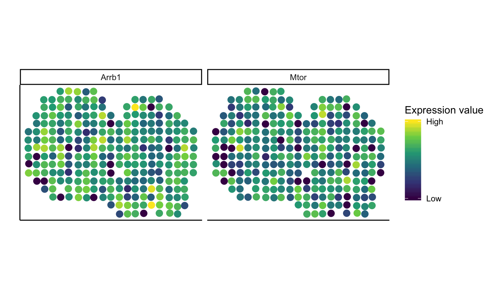
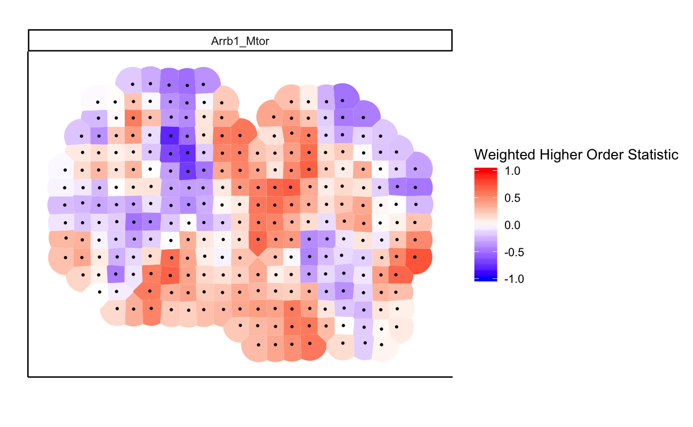
Misc
sessionInfo()
#> R Under development (unstable) (2020-03-15 r77975)
#> Platform: x86_64-apple-darwin15.6.0 (64-bit)
#> Running under: macOS Mojave 10.14.6
#>
#> Matrix products: default
#> BLAS: /Library/Frameworks/R.framework/Versions/4.0/Resources/lib/libRblas.0.dylib
#> LAPACK: /Library/Frameworks/R.framework/Versions/4.0/Resources/lib/libRlapack.dylib
#>
#> locale:
#> [1] en_AU.UTF-8/en_AU.UTF-8/en_AU.UTF-8/C/en_AU.UTF-8/en_AU.UTF-8
#>
#> attached base packages:
#> [1] parallel stats4 stats graphics grDevices utils datasets
#> [8] methods base
#>
#> other attached packages:
#> [1] scater_1.15.28 scHOT_0.99.0
#> [3] ggplot2_3.3.0 SingleCellExperiment_1.9.2
#> [5] SummarizedExperiment_1.17.3 DelayedArray_0.13.7
#> [7] BiocParallel_1.21.2 matrixStats_0.56.0
#> [9] Biobase_2.47.2 GenomicRanges_1.39.2
#> [11] GenomeInfoDb_1.23.13 IRanges_2.21.3
#> [13] S4Vectors_0.25.13 BiocGenerics_0.33.0
#>
#> loaded via a namespace (and not attached):
#> [1] viridis_0.5.1 BiocSingular_1.3.2 viridisLite_0.3.0
#> [4] splines_4.0.0 DelayedMatrixStats_1.9.0 assertthat_0.2.1
#> [7] GenomeInfoDbData_1.2.2 vipor_0.4.5 yaml_2.2.1
#> [10] pillar_1.4.3 backports_1.1.5 lattice_0.20-40
#> [13] glue_1.3.2 digest_0.6.25 XVector_0.27.1
#> [16] polyclip_1.10-0 colorspace_1.4-1 htmltools_0.4.0
#> [19] Matrix_1.2-18 plyr_1.8.6 pkgconfig_2.0.3
#> [22] zlibbioc_1.33.1 purrr_0.3.3 scales_1.1.0
#> [25] tweenr_1.0.1 ggforce_0.3.1 tibble_2.1.3
#> [28] mgcv_1.8-31 farver_2.0.3 withr_2.1.2
#> [31] deldir_0.1-25 magrittr_1.5 crayon_1.3.4
#> [34] memoise_1.1.0 evaluate_0.14 fs_1.3.2
#> [37] nlme_3.1-145 MASS_7.3-51.5 beeswarm_0.2.3
#> [40] tools_4.0.0 lifecycle_0.2.0 stringr_1.4.0
#> [43] munsell_0.5.0 irlba_2.3.3 compiler_4.0.0
#> [46] pkgdown_1.4.1 rsvd_1.0.3 rlang_0.4.5
#> [49] grid_4.0.0 RCurl_1.98-1.1 BiocNeighbors_1.5.2
#> [52] rstudioapi_0.11 igraph_1.2.4.2 bitops_1.0-6
#> [55] labeling_0.3 rmarkdown_2.1 gtable_0.3.0
#> [58] reshape_0.8.8 R6_2.4.1 gridExtra_2.3
#> [61] knitr_1.28 rprojroot_1.3-2 desc_1.2.0
#> [64] stringi_1.4.6 ggbeeswarm_0.6.0 Rcpp_1.0.3
#> [67] tidyselect_1.0.0 xfun_0.12